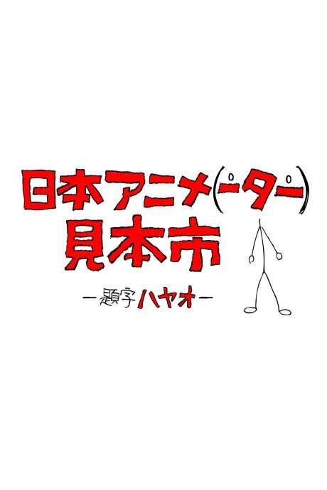
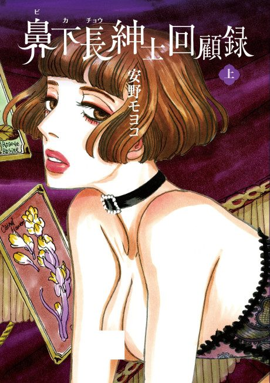

Anime
MangaJapan Anima(tor)’s Exhibition
日本アニメ（ーター）見本市
The anime takes the story to Own end.
7.1AniList
—Animeter
36 epEpisodes
Anime finished. Where does the manga pick up?
StatusOwn ending
This is an anthology of original animation shorts; only a few individual shorts adapt manga, so there is no continuing point in the manga.